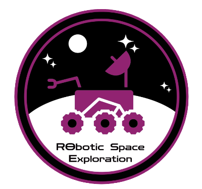
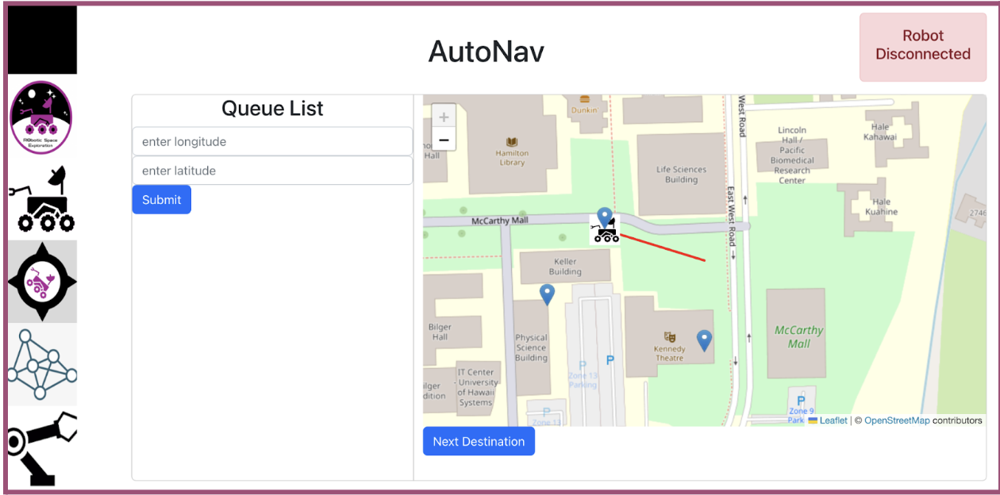
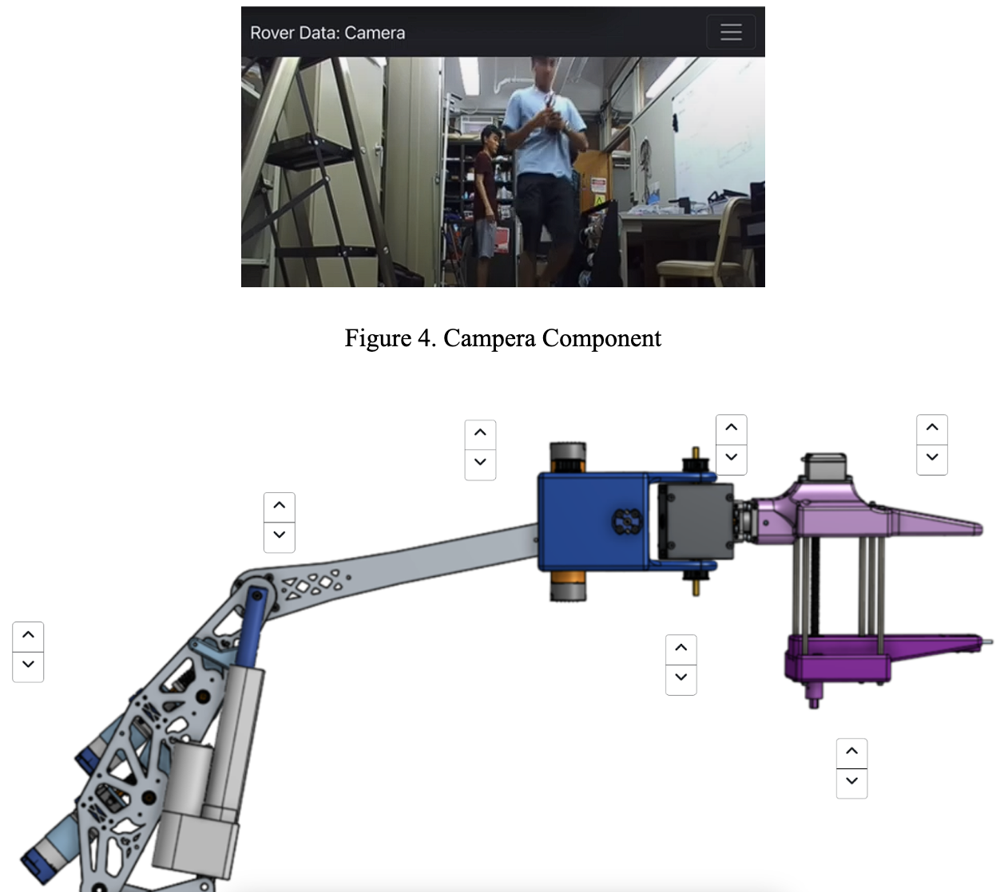
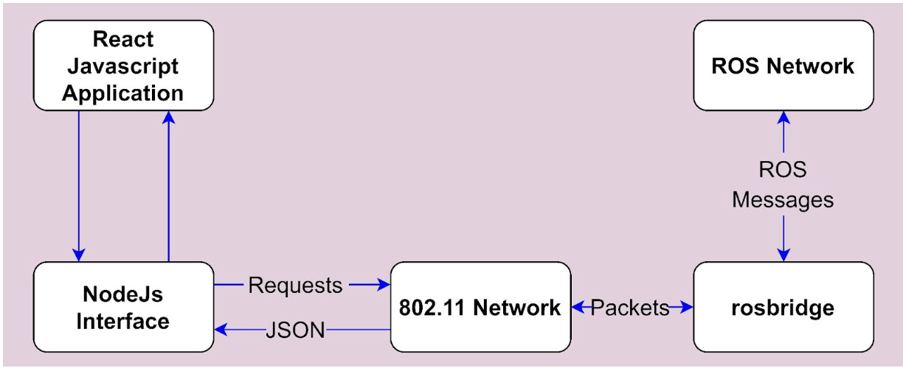

  
The front-end of the ground station UI will primarily consist of four pages and a series of pop-up windows that are constructed using React.js and React Semantic UI. The AutoNav page is made specifically for the Autonomous Navigation Mission, where it will feature the use of a two-dimensional (2D) map of the competition course where the rover’s location is marked and where waypoint markers can be manually placed, a queue list that records the list of GNSS coordinates sent to the rover for it to traverse to, and finally, a color indicator with an accompanying message that describes the rover’s current state. The Payload page contains the visual feed from the RPi cameras, a temperature monitoring chart, and a data chart, which the operator can manually input data into. The Rover Data UI consists of several modular pop-up windows that will display information on the rover, such as its speed, orientation, and location, or a control window to enable keyboard teleoperations of the rover. The modularity allows these UIs to be overlayed on top of other UI pages and make it easy to access multiple features at once, such as having the teleoperation control window up while viewing camera feeds. The Arm page will display the visual feed from the arm-mounted cameras, and it includes a pop-out window with on-screen buttons that can be clicked to move the mechanical arm and end-effector. For both teleoperations and arm control, the UI features an input display that highlights which button is currently active, allowing operators to know what commands are being received by the GSUI. The System status page will display live feedback on the conditions of the rover’s systems and components, such as if something is still operating or if it is no longer functional.

The back-end of the ground station UI utilizes Application Programming Interfaces (API) along with the rosbridge protocol, which handles the transfer of data between the ground station and the rover. The APIs, written using Node.js and Express, contain endpoints for the React Javascript application to handle HTTP requests such as “GET”, “POST”, “PUT’’ and “DELETE”. For example, these endpoints will allow the rover pilot to input a GNSS coordinate on the website and transfer it as a JSON format, which the ROS Network will be able to interpret. These HTTP requests along with the rosbridge protocol transfer JSON and data packets over the 802.11 network for point-to-point communication. The specific data for each respective UI will be determined by the specific ROS topics that the React application listens to (i.e. camera data, control software, etc.). The system design architecture of the ground station web application, as seen in Figure 3.34, illustrates how data is processed and passed between the ROS network and the React.js application. To allow the GSUI to be run on any device, the software is containerized using Docker.